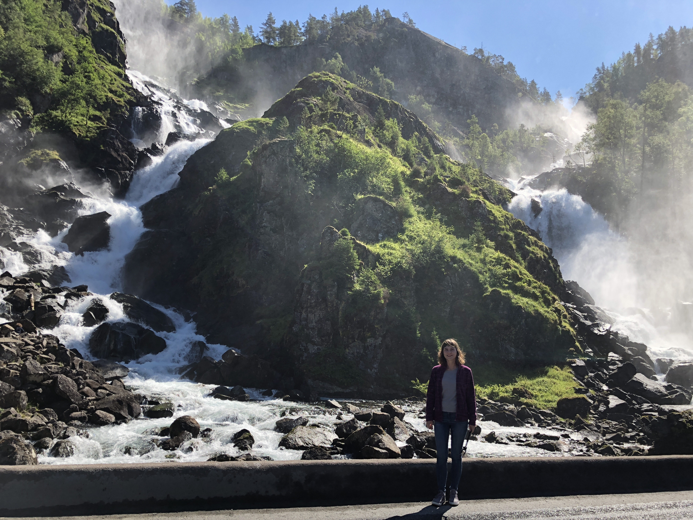

Водопады: Эспеландсфоссен, "двойной водопад" - Латефоссен и Твиндефоссен
Водопад Эспеландсфоссен находится в муниципалитете Одда провинции Хордаланн.
Эспеландфоссен имеет высоту 75 метров и делится на два потока. Он расположен рядом с водопадом Латефоссен – в 15 минутах пешей ходьбы.
Для туристов имеются удобные смотровые площадки с видом на водопад. В Норвегии есть еще один водопад с тем же названием, который находится в муниципалитете Гранвин.

Водопад Латефоссен расположен на западе страны, в фюльке Хордаланн коммуны Одда.Является одним из самых популярных туристических объектов Норвегии.
Его высота – около 165 метров. Водопад двойной, состоящий из двух потоков, падающих с примерно одинаковой высоты.Отличается он и формой течения – на одном из участков вода делает резкий поворот под прямым углом, и течет почти параллельно ближайшему шоссе.

Водопад Твиндефоссен - это ступенчатый или каскадный водопад, который является одним из самых высоких в Норвегии.Он находится у Сталхейского ущелья, неподалеку от городка Восс.
Высота падения воды составляет 152 метра.
Существует предание о том, что вода из этого водопада омолаживает и укрепляет здоровье, при этом особо целебна она для мужчин. Поэтому Твиндефоссен очень популярен среди туристов.